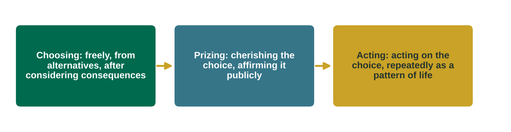
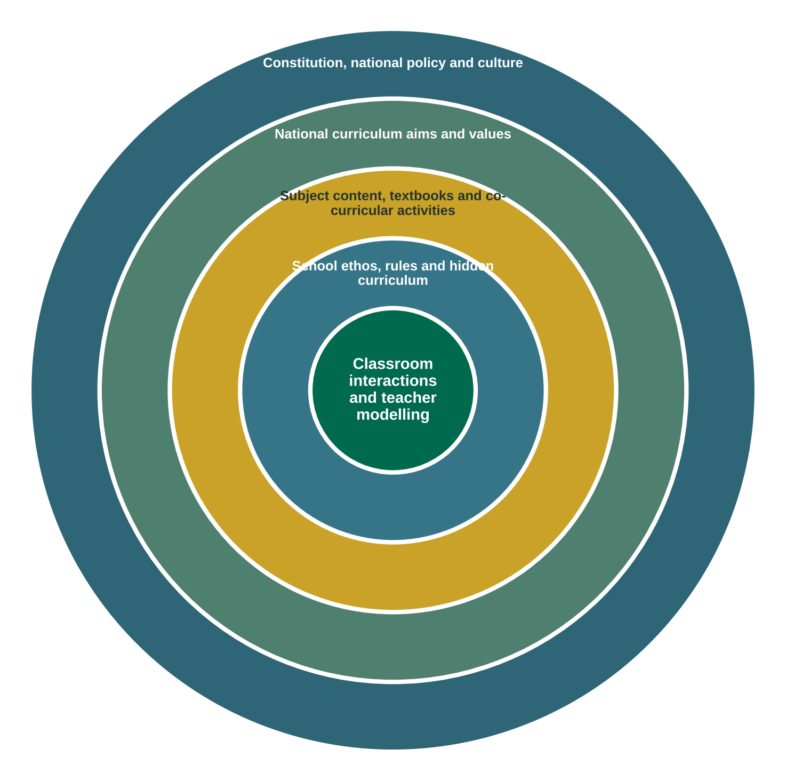
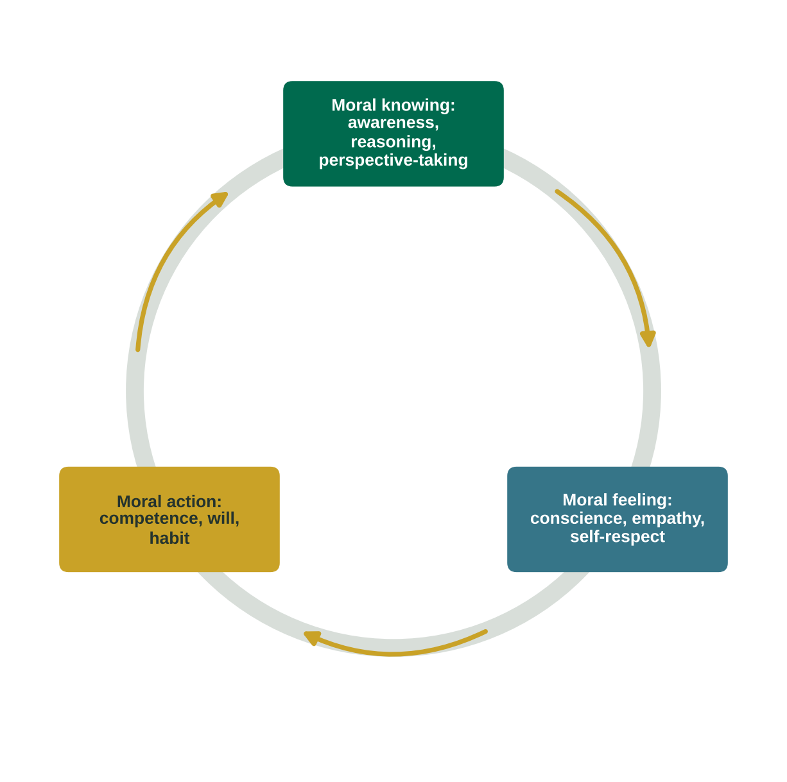

PC 121 মূল্যবোধ শিক্ষা (Value Education)
মূল্যবোধের প্রকৃতি, নৈতিক বিকাশের তত্ত্ব, মহান ব্যক্তিদের জীবন ও ধর্ম থেকে মূল্যবোধ এবং বিদ্যালয়ের মাধ্যমে মূল্যবোধ শিক্ষা
এটি ইংরেজি পাঠ নোটের বাংলা সংস্করণ। পাঠতালিকা ও তথ্যসূত্রের বইয়ের নাম মূল ভাষায় রাখা হয়েছে, যাতে লাইব্রেরিতে সহজে খুঁজে পান।
সূচিপত্র
এই কোর্স সম্পর্কে
মূল্যবোধ শিক্ষা হলো সেই নৈতিক, সামাজিক, নাগরিক, নান্দনিক ও আধ্যাত্মিক মূল্যবোধের সচেতন চর্চা, যা মানুষকে ভালো মানুষ ও সুনাগরিক হিসেবে গড়ে তোলে। এই কোর্সে মূল্যবোধের সংজ্ঞা দেওয়া হয়েছে এবং মনোভাব, বিশ্বাস ও রীতিনীতি থেকে এর পার্থক্য দেখানো হয়েছে; মূল্যবোধ কীভাবে শেখা হয় তা দেখাতে ক্র্যাথওয়লের আবেগীয় শ্রেণিবিন্যাস ব্যবহার করা হয়েছে; কোলবার্গের স্তরতত্ত্ব ও মূল্যবোধ স্পষ্টীকরণসহ ধ্রুপদি ও সমকালীন কৌশলসমূহ পর্যালোচনা করা হয়েছে; মহৎ ব্যক্তিদের জীবন এবং বাংলাদেশে প্রচলিত প্রধান ধর্মসমূহ থেকে মূল্যবোধ আহরণ করা হয়েছে; এবং বিদ্যালয়ের শিক্ষাক্রম, শিশুসাহিত্য, বিষয় ও সহশিক্ষাক্রমিক কার্যক্রম কীভাবে মূল্যবোধ লালন করতে পারে তা দেখানো হয়েছে।
কোর্সের উদ্দেশ্য
মূল্যবোধের ধারণা, প্রকৃতি, পরিধি, প্রকারভেদ ও উৎস এবং মূল্যবোধের মধ্যকার দ্বন্দ্ব ব্যাখ্যা করতে পারবেন।
মূল্যবোধ শিক্ষার বিবর্তন এবং নৈতিক ও মূল্যবোধ বিকাশের সমকালীন তত্ত্বসমূহ বিশ্লেষণ করতে পারবেন।
মহৎ জীবনে দৃষ্টান্তস্বরূপ ও প্রধান ধর্মসমূহে শিক্ষা দেওয়া মূল্যবোধগুলো চিহ্নিত করতে পারবেন।
বাংলাদেশে শিক্ষাক্রম, সাহিত্য, বিষয় ও সহশিক্ষাক্রমিক কার্যক্রমের মাধ্যমে মূল্যবোধ বিকাশের উপায় পরিকল্পনা করতে পারবেন।
প্রতিটি ইউনিট অফিশিয়াল পাঠ্যসূচির ক্রম অনুসরণ করে। প্রথমে মূল আলোচনা পড়ুন, তারপর মূল কথা বক্সগুলো, এরপর পরীক্ষার প্রস্তুতি প্রশ্ন দিয়ে নিজেকে যাচাই করুন।
সোনালি বক্স = অবশ্যই মনে রাখার বিষয়। সবুজাভ নীল বক্স = সংজ্ঞা ও পড়ার কৌশল। সবুজ বক্স = বাংলাদেশ প্রেক্ষাপট।
শেষ অধ্যায়টি বিশ্ববিদ্যালয় পরীক্ষার ধরনে একটি প্রশ্নব্যাংক (উত্তরসহ MCQ, সংক্ষিপ্ত ও রচনামূলক প্রশ্ন), এরপর APA 7th রীতিতে পূর্ণ তথ্যসূত্র।
ভর্তি, বাজেট ও নীতি সংক্রান্ত পরিসংখ্যান প্রতি বছর বদলায়। পরীক্ষার আগে BANBEIS, DPE, UGC ও UNESCO-এর সর্বশেষ তথ্য দেখে নিন।
ইউনিট ১: মূল্যবোধ শিক্ষার মৌলিক বিষয়াবলি
অধ্যায়ের সারসংক্ষেপ
value শব্দটি লাতিন valere থেকে এসেছে, যার অর্থ "শক্তিশালী হওয়া, মূল্যবান হওয়া"। মূল্যবোধ (value) হলো কোনটি কাম্য, ভালো বা মূল্যবান সে সম্পর্কে একটি স্থায়ী বিশ্বাস, যা আমাদের পছন্দ ও আচরণকে পরিচালিত করে।
এই অধ্যায়ে যা আছে: মৌলিক ধারণা; প্রকৃতি ও পরিধি; আবেগীয় শিখনের শ্রেণিবিন্যাস ও মূল্যবোধ শিখন; অন্যান্য আবেগীয় প্রত্যয় থেকে মূল্যবোধের পার্থক্য; মূল্যবোধের প্রকারভেদ; মূল্যবোধের উৎস; মূল্যবোধের প্রতিযোগিতা ও দ্বন্দ্ব।
মূল পরিভাষা:
- মূল্যবোধ : "একটি স্থায়ী বিশ্বাস যে আচরণের একটি নির্দিষ্ট ধরন বা অস্তিত্বের একটি নির্দিষ্ট চূড়ান্ত অবস্থা এর বিপরীত বা উল্টো আচরণের ধরন বা অস্তিত্বের চূড়ান্ত অবস্থার তুলনায় ব্যক্তিগত বা সামাজিকভাবে অধিকতর কাম্য" (Rokeach, 1973, p. 5)।
মনে রাখার মূল বিষয়:
- মূল্যবোধ শিক্ষা কেবল তখনই সফল হয়, যখন শিক্ষার্থীরা গ্রহণ ও সাড়াদানের স্তর পেরিয়ে মূল্য আরোপ ও চরিত্রায়ণের স্তরে পৌঁছায়; এর জন্য কেবল উপদেশ নয়, অভিজ্ঞতা, প্রতিফলন ও অনুশীলন প্রয়োজন।
শিক্ষাক্রমে যা বলা হয়েছেইউনিট ১: মূল্যবোধ শিক্ষার মৌলিক বিষয়াবলি · ৮ সংযোগ ঘণ্টা
এই ইউনিট শেষে শিক্ষার্থীরা যা পারবে
- মূল্যবোধ শিক্ষার মৌলিক ধারণা, প্রকৃতি ও পরিধি ব্যাখ্যা করতে পারবেন
- আবেগীয় শিখন ক্ষেত্রের শ্রেণিবিন্যাস ব্যাখ্যা করতে এবং তা মূল্যবোধ শিখনের সঙ্গে সম্পর্কিত করতে পারবেন
- অন্যান্য আবেগীয় বৈশিষ্ট্য থেকে মূল্যবোধের পার্থক্য আলোচনা করতে পারবেন
- বিভিন্ন প্রকার মূল্যবোধ চিহ্নিত ও আলোচনা করতে পারবেন
- মূল্যবোধের উৎসসমূহ ব্যাখ্যা করতে পারবেন
- মৌলিক ধারণা; মূল্যবোধ শিক্ষার প্রকৃতি ও পরিধি
- আবেগীয় শিখনের শ্রেণিবিন্যাস ও মূল্যবোধ শিখন
- অন্যান্য আবেগীয় প্রত্যয় থেকে মূল্যবোধের পার্থক্য
- মূল্যবোধের প্রকারভেদ
- মূল্যবোধের উৎস
- মূল্যবোধের প্রতিযোগিতা ও দ্বন্দ্ব
১.১ মৌলিক ধারণা
value শব্দটি লাতিন valere থেকে এসেছে, যার অর্থ "শক্তিশালী হওয়া, মূল্যবান হওয়া"। মূল্যবোধ (value) হলো কোনটি কাম্য, ভালো বা মূল্যবান সে সম্পর্কে একটি স্থায়ী বিশ্বাস, যা আমাদের পছন্দ ও আচরণকে পরিচালিত করে।
মূল্যবোধ: "একটি স্থায়ী বিশ্বাস যে আচরণের একটি নির্দিষ্ট ধরন বা অস্তিত্বের একটি নির্দিষ্ট চূড়ান্ত অবস্থা এর বিপরীত বা উল্টো আচরণের ধরন বা অস্তিত্বের চূড়ান্ত অবস্থার তুলনায় ব্যক্তিগত বা সামাজিকভাবে অধিকতর কাম্য" (Rokeach, 1973, p. 5)।
মূল্যবোধ শিক্ষা (Value education) হলো শিক্ষার্থীদের মূল্যবোধ বুঝতে, আত্মস্থ করতে ও সে অনুযায়ী কাজ করতে সহায়তা করার একটি সচেতন প্রক্রিয়া। হ্যালস্টেড ও টেলর (Halstead and Taylor) (2000) মূল্যবোধ শিক্ষাকে সংজ্ঞায়িত করেছেন "সেই নীতি ও মৌলিক প্রত্যয়, যা আচরণের সাধারণ নির্দেশিকা হিসেবে কাজ করে এবং যে মানদণ্ডে নির্দিষ্ট কাজকে ভালো বা কাম্য বলে বিচার করা হয়" এবং বিদ্যালয়ে সেগুলোর সঞ্চালন হিসেবে।
১.২ প্রকৃতি ও পরিধি
প্রকৃতি: মূল্যবোধ অর্জিত (সহজাত নয়), তুলনামূলকভাবে স্থায়ী, স্তরবিন্যস্ত (অগ্রাধিকার অনুযায়ী সংগঠিত), আবেগপূর্ণ, একই সঙ্গে ব্যক্তিগত ও সমষ্টিগত, সংস্কৃতি দ্বারা প্রভাবিত এবং আচরণে প্রকাশিত।
পরিধি: নৈতিক মূল্যবোধ, সামাজিক মূল্যবোধ, নাগরিক ও গণতান্ত্রিক মূল্যবোধ, সাংস্কৃতিক মূল্যবোধ, নান্দনিক মূল্যবোধ, পরিবেশগত মূল্যবোধ, আধ্যাত্মিক ও ধর্মীয় মূল্যবোধ, পেশাগত ও কর্মসংক্রান্ত মূল্যবোধ এবং সর্বজনীন মানবিক মূল্যবোধ (মানবাধিকার, শান্তি, সহনশীলতা)।
১.৩ আবেগীয় শিখনের শ্রেণিবিন্যাস ও মূল্যবোধ শিখন
ক্র্যাথওয়ল, ব্লুম ও মাসিয়া (Krathwohl, Bloom and Masia) (1964) পাঁচটি স্তরে মূল্যবোধ কীভাবে আত্মস্থ হয় তা বর্ণনা করেছেন:

চিত্র ১. ক্র্যাথওয়লের আবেগীয় ক্ষেত্রের শ্রেণিবিন্যাস: ভিত্তির দিকে আত্মস্থকরণ বৃদ্ধি পায়
| স্তর | শিক্ষার্থী যা করে | উদাহরণ (মূল্যবোধ: সততা) |
|---|---|---|
| গ্রহণ (Receiving) | মূল্যবোধটি সম্পর্কে সচেতন হয় | সততা বিষয়ক একটি গল্প শোনে |
| সাড়াদান (Responding) | প্রতিক্রিয়া দেখায়, অংশগ্রহণ করে | চরিত্রটি কেন সৎ ছিল সে বিষয়ে প্রশ্নের উত্তর দেয় |
| মূল্য আরোপ (Valuing) | মূল্যবোধটি গ্রহণ করে ও তাকে অগ্রাধিকার দেয় | হারানো একটি কলম ফেরত দেওয়ার সিদ্ধান্ত নেয় এবং কারণ ব্যাখ্যা করে |
| সংগঠন | অন্যান্য মূল্যবোধের সঙ্গে এটিকে সমন্বিত করে | প্রতারণাকারী এক বন্ধুর প্রতি আনুগত্যের বিপরীতে সততাকে বিবেচনা করে |
| চরিত্রায়ণ (Characterisation) | ধারাবাহিকভাবে সে অনুযায়ী জীবনযাপন করে | সহপাঠী ও শিক্ষকদের কাছে নির্ভরযোগ্যভাবে সৎ হিসেবে পরিচিত হয় |
মূল্যবোধ শিক্ষা কেবল তখনই সফল হয়, যখন শিক্ষার্থীরা গ্রহণ ও সাড়াদানের স্তর পেরিয়ে মূল্য আরোপ ও চরিত্রায়ণের স্তরে পৌঁছায়; এর জন্য কেবল উপদেশ নয়, অভিজ্ঞতা, প্রতিফলন ও অনুশীলন প্রয়োজন।
১.৪ অন্যান্য আবেগীয় প্রত্যয় থেকে মূল্যবোধের পার্থক্য
| প্রত্যয় | সংজ্ঞা | মূল্যবোধের সঙ্গে সম্পর্ক |
|---|---|---|
| বিশ্বাস (Belief) | সত্য বলে গৃহীত একটি বক্তব্য ("কঠোর পরিশ্রম সাফল্য আনে") | মূল্যবোধ হলো কোনটি কাম্য সে সম্পর্কে বিশ্বাস |
| মনোভাব (Attitude) | কোনো বস্তু, ব্যক্তি বা ধারণার প্রতি অনুকূল বা প্রতিকূলভাবে সাড়া দেওয়ার অর্জিত প্রবণতা | পরিসরে সংকীর্ণ ও অধিকতর সুনির্দিষ্ট; মূল্যবোধ মনোভাবের ভিত্তি |
| আগ্রহ (Interest) | কোনো কার্যক্রমের প্রতি পছন্দ | কম স্থায়ী; মূল্যবোধ দ্বারা গঠিত হতে পারে |
| রীতি (Norm) | আচরণ সম্পর্কে একটি সামাজিক নিয়ম বা প্রত্যাশা | রীতি বাহ্যিক ও গোষ্ঠীভিত্তিক; মূল্যবোধ অভ্যন্তরীণ মানদণ্ড |
| আদর্শ (Ideal) | পূর্ণতার একটি ধারণা বা অর্জনের জন্য আকাঙ্ক্ষিত একটি মানদণ্ড | মূল্যবোধের সর্বোচ্চ রূপ |
| নৈতিকতা (Morals) | সঠিক ও ভুল আচরণ সম্পর্কিত নীতিমালা | নৈতিক মূল্যবোধ মূল্যবোধেরই একটি উপসেট |
| নীতিশাস্ত্র (Ethics) | নৈতিকতার নিয়মতান্ত্রিক অধ্যয়ন; আচরণবিধি | নীতিশাস্ত্র মূল্যবোধ নিয়ে প্রতিফলন করে এবং এর যৌক্তিকতা প্রতিষ্ঠা করে |
| সদ্গুণ (Virtue) | ভালোভাবে কাজ করার একটি স্থিত চারিত্রিক প্রবণতা (অ্যারিস্টটল (Aristotle)) | চারিত্রিক বৈশিষ্ট্য হিসেবে আত্মস্থ একটি মূল্যবোধ |
১.৫ মূল্যবোধের প্রকারভেদ

চিত্র ২. মূল্যবোধের প্রকারভেদ
অন্যান্য শ্রেণিবিভাগ:
রোকিচ (Rokeach) (1973): চূড়ান্ত মূল্যবোধ (terminal values; কাম্য চূড়ান্ত অবস্থা, যেমন স্বাধীনতা, সমতা, প্রজ্ঞা, শান্তিপূর্ণ বিশ্ব) এবং সহায়ক মূল্যবোধ (instrumental values; আচরণের কাম্য ধরন, যেমন সৎ, দায়িত্বশীল, সাহসী, পরোপকারী)।
স্প্র্যাঙ্গার (Spranger) (1928): তাত্ত্বিক, অর্থনৈতিক, নান্দনিক, সামাজিক, রাজনৈতিক ও ধর্মীয় মূল্যবোধ।
শোয়ার্টজ (Schwartz) (1992): দশটি সর্বজনীন মূল্যবোধ (আত্মনির্দেশনা, উদ্দীপনা, সুখবাদ, অর্জন, ক্ষমতা, নিরাপত্তা, অনুবর্তিতা, ঐতিহ্য, পরোপকার, সর্বজনীনতা), যেগুলো সামঞ্জস্য ও দ্বন্দ্ব অনুযায়ী একটি বৃত্তে বিন্যস্ত।
অন্তর্নিহিত (নিজের জন্যই মূল্যবান) এবং বাহ্যিক/সহায়ক (উপায় হিসেবে মূল্যবান)।
সর্বজনীন (মানবমর্যাদা, সত্য, অহিংসা) এবং সংস্কৃতিনির্দিষ্ট মূল্যবোধ।
১.৬ মূল্যবোধের উৎস
পরিবার (প্রাথমিক উৎস); ধর্ম; বিদ্যালয় ও শিক্ষক; সমবয়সী দল; সম্প্রদায় ও সংস্কৃতি; গণমাধ্যম ও সামাজিক মাধ্যম; সাহিত্য ও শিল্পকলা; জাতীয় আদর্শ ও সংবিধান; মহান ব্যক্তিত্ব; ব্যক্তিগত অভিজ্ঞতা ও প্রতিফলন।
১.৭ মূল্যবোধের প্রতিযোগিতা ও দ্বন্দ্ব
মূল্যবোধ বিভিন্ন স্তরে প্রতিযোগিতা বা দ্বন্দ্বে লিপ্ত হতে পারে:
অন্তঃব্যক্তিক দ্বন্দ্ব: একই ব্যক্তির মধ্যে, যেমন সততা বনাম বন্ধুর প্রতি আনুগত্য, কিংবা উচ্চাকাঙ্ক্ষা বনাম পারিবারিক কর্তব্য।
আন্তঃব্যক্তিক দ্বন্দ্ব: ভিন্ন ভিন্ন অগ্রাধিকারসম্পন্ন ব্যক্তিদের মধ্যে।
আন্তঃপ্রজন্ম দ্বন্দ্ব: পিতামাতার প্রথাগত মূল্যবোধ ও তরুণদের আধুনিক মূল্যবোধের মধ্যে (যেমন পারিবারিকভাবে স্থির করা বিয়ে বনাম নিজের পছন্দের বিয়ে, পেশা নির্বাচন)।
আন্তঃসাংস্কৃতিক / সামাজিক দ্বন্দ্ব: বিভিন্ন গোষ্ঠী, ধর্ম বা সংস্কৃতির মধ্যে, কিংবা ঐতিহ্য ও আধুনিকতার মধ্যে (যেমন ব্যক্তিস্বাতন্ত্র্যবাদ বনাম সমষ্টিবাদ)।
প্রাতিষ্ঠানিক দ্বন্দ্ব: বিদ্যালয়ের মূল্যবোধ (সহযোগিতা) ও পরীক্ষাকেন্দ্রিক সংস্কৃতির (প্রতিযোগিতা) মধ্যে।
শিক্ষায় দ্বন্দ্ব নিরসন: নৈতিক উভয়সংকট (moral dilemma) নিয়ে আলোচনা, মূল্যবোধ স্পষ্টীকরণ, অন্যের দৃষ্টিকোণ গ্রহণ, সংলাপ, অভিন্ন সর্বজনীন মূল্যবোধ ও মানবাধিকারের উল্লেখ এবং নৈতিক যুক্তির বিকাশ।
ইউনিট ২: মূল্যবোধ বিকাশের বিবর্তন ও কৌশলসমূহ
অধ্যায়ের সারসংক্ষেপ
ইতিহাসজুড়ে নৈতিক শিক্ষা ধর্মীয় শিক্ষা থেকে অবিচ্ছেদ্য ছিল: বৈদিক গুরুকুল , বৌদ্ধ বিহার , ইসলামি মক্তব ও মাদ্রাসা এবং খ্রিষ্টান গির্জা-বিদ্যালয়ে। ধর্মগ্রন্থ, আদর্শ জীবন ও আচার-অনুষ্ঠান ছিল মূল্যবোধ সঞ্চালনের প্রধান মাধ্যম।
এই অধ্যায়ে যা আছে: মূল্যবোধ শিক্ষার বিবর্তন; সমকালীন তত্ত্ব ও কৌশলসমূহ; শিক্ষাক্রমের বিভিন্ন স্তরের মাধ্যমে মূল্যবোধের সঞ্চালন।
শিক্ষাক্রমে যা বলা হয়েছেইউনিট ২: মূল্যবোধ বিকাশের বিবর্তন ও কৌশলসমূহ · ৮ সংযোগ ঘণ্টা
এই ইউনিট শেষে শিক্ষার্থীরা যা পারবে
- বিশেষত প্রাচীন গ্রিক সভ্যতার প্রেক্ষাপটে মূল্যবোধ শিক্ষার বিবর্তন আলোচনা করতে পারবেন
- মূল্যবোধ বিকাশের সমকালীন তত্ত্ব ও কৌশলসমূহ বিশ্লেষণ করতে পারবেন
- শিক্ষাক্রমের বিভিন্ন স্তরের মাধ্যমে মূল্যবোধ সঞ্চালনের প্রক্রিয়া ব্যাখ্যা করতে পারবেন
- মূল্যবোধ শিক্ষার বিবর্তন: গ্রিক উৎস, ধর্মীয় ঐতিহ্য
- মূল্যবোধ বিকাশের সমকালীন তত্ত্ব ও কৌশলসমূহ a. আগ্রহ তত্ত্ব b. পরীক্ষণমূলক তত্ত্ব c. অংশ-সমগ্র তত্ত্ব d. স্বজ্ঞাবাদী তত্ত্ব e. কঠোরতাবাদী তত্ত্ব f. বিধিবাদী তত্ত্ব g. ভাববাদী তত্ত্ব h. ধর্মীয় তত্ত্ব i. সামাজিক নৈতিকতার তত্ত্ব j. ব্যক্তিগত বিকাশের তত্ত্ব k. মূল্যবোধ স্পষ্টীকরণ
- শিক্ষাক্রমের বিভিন্ন স্তরের মাধ্যমে মূল্যবোধ সঞ্চালনের প্রক্রিয়া
২.১ মূল্যবোধ শিক্ষার বিবর্তন
গ্রিক উৎস
সক্রেটিস (Socrates): "সদ্গুণই জ্ঞান"; পরীক্ষিত জীবন; নৈতিক সত্য আবিষ্কারের জন্য সংলাপ।
প্লেটো (Plato): আদর্শ রাষ্ট্রে চারটি প্রধান সদ্গুণ (প্রজ্ঞা, সাহস, সংযম, ন্যায়পরায়ণতা) বিকাশের জন্য শিক্ষা।
অ্যারিস্টটল: সদ্গুণ হলো অভ্যাসের মাধ্যমে গড়ে ওঠা সোনালি মধ্যপন্থা; eudaimonia (সমৃদ্ধি) অর্জনের জন্য চরিত্র গঠন হিসেবে নৈতিক শিক্ষা। এটিই সমকালীন চরিত্র শিক্ষার (character education) মূল।
ধর্মীয় ঐতিহ্য
ইতিহাসজুড়ে নৈতিক শিক্ষা ধর্মীয় শিক্ষা থেকে অবিচ্ছেদ্য ছিল: বৈদিক গুরুকুল, বৌদ্ধ বিহার, ইসলামি মক্তব ও মাদ্রাসা এবং খ্রিষ্টান গির্জা-বিদ্যালয়ে। ধর্মগ্রন্থ, আদর্শ জীবন ও আচার-অনুষ্ঠান ছিল মূল্যবোধ সঞ্চালনের প্রধান মাধ্যম। আধুনিক রাষ্ট্রে ধর্মনিরপেক্ষকরণের ফলে ধর্ম থেকে পৃথকভাবে মূল্যবোধ শেখানো যায় কি না এবং কীভাবে যায়, তা নিয়ে বিতর্ক শুরু হয়; অনেক শিক্ষাব্যবস্থা (বাংলাদেশের "ধর্ম ও নৈতিক শিক্ষা"সহ) উভয়ের সমন্বয় করে।
আধুনিক অগ্রগতি
*ডুর্খেইম (Durkheim) (1925), Moral Education:* নৈতিকতার তিনটি উপাদান: শৃঙ্খলার চেতনা, সামাজিক গোষ্ঠীর প্রতি অনুরাগ এবং স্বাধিকার (নিয়মের পেছনের কারণ বোঝা)।
*পিয়াজে (Piaget) (1932), The Moral Judgment of the Child:* পরনির্ভর নৈতিকতা (নিয়ম কর্তৃপক্ষ প্রদত্ত ও অপরিবর্তনীয়; পরিণতি দেখে বিচার) থেকে স্বাধীন নৈতিকতায় উত্তরণ (নিয়ম সামাজিক সমঝোতা; উদ্দেশ্য দেখে বিচার)।
চরিত্র শিক্ষা আন্দোলন (বিংশ শতাব্দীর প্রথমার্ধে এবং ১৯৯০-এর দশক থেকে পুনরুজ্জীবিত), মূল্যবোধ স্পষ্টীকরণ (১৯৬০–৭০-এর দশক), জ্ঞানীয়-বিকাশমূলক নৈতিক শিক্ষা (কোলবার্গ), যত্নের নীতিশাস্ত্র (নডিংস) এবং সামাজিক-আবেগীয় শিখন।
২.২ সমকালীন তত্ত্ব ও কৌশলসমূহ
(i) সামাজিক নৈতিকতার তত্ত্ব
সমাজের রীতিনীতি ও মূল্যবোধে সামাজিকীকরণের (socialisation) মাধ্যমে নৈতিকতা শেখা হয়। ডুর্খেইম নৈতিকতাকে সামাজিক উৎসজাত হিসেবে দেখেছেন: সমাজই নৈতিক কর্তৃত্বের উৎস, এবং বিদ্যালয়ের কাজ হলো শিশুকে সমাজ ও তার নিয়মের সঙ্গে যুক্ত করা। সামাজিক শিখন তত্ত্ব (বান্দুরা (Bandura)) এর সঙ্গে যোগ করে যে মূল্যবোধ শেখা হয় আদর্শ ব্যক্তিকে পর্যবেক্ষণ ও অনুকরণের মাধ্যমে এবং পুনর্বলনের মাধ্যমে। শিক্ষাগত তাৎপর্য: শিক্ষক ও প্রতিষ্ঠানকে মূল্যবোধের আদর্শ হতে হবে; বিদ্যালয়ের পরিবেশ ও নিয়ম, অপ্রকাশ্য শিক্ষাক্রম (hidden curriculum) এবং সমাজের অংশগ্রহণ পাঠের মতোই গুরুত্বপূর্ণ।
(ii) ব্যক্তিগত বিকাশের তত্ত্ব
মূল্যবোধ সমগ্র ব্যক্তি ও আত্মসত্তার বৃদ্ধির অংশ হিসেবে বিকশিত হয়। মানবতাবাদী মনোবিজ্ঞানীরা (রজার্স (Rogers), মাসলো (Maslow)) মনে করেন, গ্রহণযোগ্যতা, সহমর্মিতা ও আন্তরিকতার পরিবেশে মানুষ স্বাভাবিকভাবেই আত্মবাস্তবায়ন ও সমাজমুখী মূল্যবোধের দিকে অগ্রসর হয়। এরিকসনের (Erikson) মনোসামাজিক স্তরতত্ত্ব প্রতিটি স্তরের সমাধানের সঙ্গে একেকটি সদ্গুণকে যুক্ত করে (আশা, ইচ্ছাশক্তি, উদ্দেশ্য, দক্ষতা, বিশ্বস্ততা, ভালোবাসা, যত্ন, প্রজ্ঞা)। শিক্ষাগত তাৎপর্য: সহায়ক সম্পর্ক, আত্মপ্রতিফলন, স্বাধিকার এবং দায়িত্ব গ্রহণের সুযোগ।
(iii) মূল্যবোধ স্পষ্টীকরণ
লুই র্যাথস, মেরিল হারমিন ও সিডনি সাইমন (Louis Raths, Merrill Harmin and Sidney Simon) Values and Teaching (1966) গ্রন্থে এটি উদ্ভাবন করেন। মূল্যবোধ চাপিয়ে না দিয়ে শিক্ষকরা একটি সাত ধাপের মূল্য আরোপ প্রক্রিয়ার মাধ্যমে শিক্ষার্থীদের নিজেদের মূল্যবোধ স্পষ্ট করতে সহায়তা করেন:

চিত্র ৩. মূল্যবোধ স্পষ্টীকরণে মূল্য আরোপ প্রক্রিয়া (Raths, Harmin & Simon, 1966)
কৌশলসমূহ: স্পষ্টীকরণমূলক প্রতিক্রিয়া, মূল্যবোধ ধারাক্রম (values continuum), ক্রমানুসারে সাজানো, মূল্যবোধ ভোট, "যে বিশটি কাজ করতে আমি ভালোবাসি" এবং মূল্যবোধ পত্র। সমালোচনা: এটি নৈতিক আপেক্ষিকতাবাদের ("সব মূল্যবোধ সমানভাবে বৈধ") ঝুঁকি তৈরি করে এবং সঠিক ও ভুল সম্পর্কে সামান্যই দিকনির্দেশনা দেয় (Lockwood, 1978; পরবর্তীকালে কির্শেনবাম (Kirschenbaum) সমন্বিত মূল্যবোধ শিক্ষার প্রস্তাব দেন)।
(iv) কোলবার্গের নৈতিক বিকাশ তত্ত্ব
লরেন্স কোলবার্গ (Lawrence Kohlberg) (1958, 1981) পিয়াজের তত্ত্বকে সম্প্রসারিত করেন। নৈতিক উভয়সংকট ব্যবহার করে (যেমন হাইঞ্জ উভয়সংকট (Heinz dilemma): মৃত্যুপথযাত্রী স্ত্রীকে বাঁচাতে হাইঞ্জের কি এমন ওষুধ চুরি করা উচিত, যা কেনার সামর্থ্য তার নেই?) তিনি উত্তরগুলোর পেছনের যুক্তি বিশ্লেষণ করেন এবং ছয়টি স্তরসহ তিনটি পর্যায় চিহ্নিত করেন:
| স্তর | পর্যায় | দৃষ্টিভঙ্গি | সাধারণ যুক্তি |
|---|---|---|---|
| প্রাক-প্রথাগত পর্যায় (৯ বছরের কম বয়সী অধিকাংশ শিশু) | ১. আনুগত্য ও শাস্তি | শাস্তি এড়ানো | "তার চুরি করা উচিত নয়, কারণ সে জেলে যাবে।" |
| ২. ব্যক্তিস্বার্থ ও বিনিময় (সহায়ক) | আত্মস্বার্থ, ন্যায্য লেনদেন | "স্ত্রীকে তার প্রয়োজন হলে তার চুরি করা উচিত।" | |
| প্রথাগত পর্যায় (অধিকাংশ কিশোর-কিশোরী ও প্রাপ্তবয়স্ক) | ৩. উত্তম আন্তঃব্যক্তিক সম্পর্ক ("ভালো ছেলে/ভালো মেয়ে") | অন্যের অনুমোদন | "একজন ভালো স্বামী তাকে বাঁচাতে চুরি করবে।" |
| ৪. সামাজিক শৃঙ্খলা রক্ষা (আইন ও শৃঙ্খলা) | কর্তব্য, আইন, কর্তৃপক্ষ | "চুরি করা আইনবিরোধী; এতে সমাজ ভেঙে পড়বে।" | |
| উত্তর-প্রথাগত পর্যায় (সংখ্যালঘু প্রাপ্তবয়স্ক) | ৫. সামাজিক চুক্তি ও ব্যক্তির অধিকার | আইন হলো সামাজিক সমঝোতা, যা পরিবর্তন করা যায় | "জীবনের অধিকার সম্পত্তির আইনের ঊর্ধ্বে।" |
| ৬. সর্বজনীন নৈতিক নীতি | ন্যায়বিচার, মর্যাদা, বিবেক | "জীবনের একটি সর্বজনীন মূল্য আছে; তাকে নীতি অনুযায়ী কাজ করতে হবে।" |

চিত্র ৪. কোলবার্গের নৈতিক যুক্তির পর্যায়সমূহ, সর্বোচ্চটি শীর্ষে
শিক্ষাগত তাৎপর্য: নৈতিক উভয়সংকট নিয়ে আলোচনা ("ব্ল্যাট প্রভাব" (Blatt effect): সামান্য উচ্চতর স্তরের সহপাঠীদের সঙ্গে আলোচনা বিকাশকে ত্বরান্বিত করে), ন্যায়ভিত্তিক সম্প্রদায় (just community) বিদ্যালয় (নিয়ম প্রণয়নে গণতান্ত্রিক অংশগ্রহণ) এবং মতাদর্শ চাপিয়ে দেওয়ার পরিবর্তে নৈতিক যুক্তির প্রতি মনোযোগ। সমালোচনা: ক্যারল গিলিগান (Carol Gilligan) (1982) যুক্তি দেন যে তত্ত্বটি পুরুষালি "ন্যায়" অভিমুখিতার প্রতি পক্ষপাতদুষ্ট এবং "যত্ন" অভিমুখিতাকে উপেক্ষা করে; এটি আচরণের পরিবর্তে যুক্তির ওপর জোর দেয়; এবং ষষ্ঠ স্তর কদাচিৎ পাওয়া যায় ও তা সাংস্কৃতিকভাবে পক্ষপাতদুষ্ট হতে পারে (Snarey, 1985)।
এই কোর্সে কোলবার্গের তত্ত্ব সবচেয়ে বেশি পরীক্ষিত তত্ত্বগুলোর একটি। প্রতিটির জন্য হাইঞ্জ-ধাঁচের একটি করে উদাহরণসহ ছয়টি স্তর এবং গিলিগানের সমালোচনা শিখে রাখুন।
অন্যান্য কৌশল
চরিত্র শিক্ষা (Lickona, 1991): নৈতিক জ্ঞান, নৈতিক অনুভূতি ও নৈতিক আচরণ; মূল মূল্যবোধ হিসেবে শ্রদ্ধা ও দায়িত্ববোধ; সমগ্র বিদ্যালয় কৌশল।
যত্নের নীতিশাস্ত্র (Noddings, 1984): আদর্শ প্রদর্শন, সংলাপ, অনুশীলন ও স্বীকৃতি।
অন্তঃস্থাপন (Inculcation): মূল্যবোধের প্রত্যক্ষ শিক্ষাদান ও পুনর্বলন (মৌলিক রীতিনীতির ক্ষেত্রে কার্যকর, তবে মতাদর্শ চাপিয়ে দেওয়ার ঝুঁকি রয়েছে)।
নৈতিক যুক্তি, বিশ্লেষণ ও কর্মভিত্তিক শিখন কৌশলসমূহ (Superka et al., 1976-এর শ্রেণিবিভাগ: অন্তঃস্থাপন, নৈতিক বিকাশ, বিশ্লেষণ, স্পষ্টীকরণ, কর্মভিত্তিক শিখন)।
লিভিং ভ্যালুজ এডুকেশন প্রোগ্রাম (Living Values Education Programme) (UNESCO-সমর্থিত, ১৯৯৬ থেকে): বারোটি মূল্যবোধ (শান্তি, শ্রদ্ধা, ভালোবাসা, দায়িত্ববোধ, সুখ, সহযোগিতা, সততা, বিনয়, সহনশীলতা, সরলতা, স্বাধীনতা, ঐক্য)।
২.৩ শিক্ষাক্রমের বিভিন্ন স্তরের মাধ্যমে মূল্যবোধের সঞ্চালন

চিত্র ৫. শিক্ষাক্রমের বিভিন্ন স্তরের মাধ্যমে মূল্যবোধ যেভাবে সঞ্চালিত হয়
জাতীয় স্তর: সংবিধান, জাতীয় শিক্ষানীতি ২০১০ ও জাতীয় শিক্ষাক্রম রূপরেখা ২০২১ (NCF 2021) জাতীয় মূল্যবোধসমূহ (দেশপ্রেম, মুক্তিযুদ্ধের চেতনা, গণতন্ত্র, ধর্মনিরপেক্ষতা, মানবতাবাদ, জেন্ডার সমতা, বৈচিত্র্যের প্রতি শ্রদ্ধা) উল্লেখ করে।
শিক্ষাক্রম স্তর: মূল্যবোধ শিক্ষার লক্ষ্য, যোগ্যতা, বিষয়ভিত্তিক শিখনফল ও আন্তঃবিষয়ক ইস্যুর মধ্যে অন্তর্ভুক্ত থাকে।
পাঠ্যপুস্তক স্তর: বিষয়বস্তু, গল্প, ছবি ও কার্যক্রম মূল্যবোধ বহন করে (ইতিবাচকভাবে, অথবা কখনো কখনো গতানুগতিক ধারণা)।
বিদ্যালয় স্তর: পরিবেশ, নিয়ম, সমাবেশ, উদ্যাপন, শৃঙ্খলা নীতি ও অপ্রকাশ্য শিক্ষাক্রম।
শ্রেণিকক্ষ স্তর: শিক্ষকের আচরণ, সম্পর্ক, পদ্ধতি (সহযোগিতামূলক শিখন সহযোগিতার মনোভাব গড়ে তোলে) এবং শিক্ষার্থীদের প্রতি সাড়াদান।
ইউনিট ৩: মহৎ জীবন অধ্যয়নের মাধ্যমে মূল্যবোধের বিকাশ
অধ্যায়ের সারসংক্ষেপ
মহান ব্যক্তিদের জীবন অধ্যয়ন শিক্ষার্থীদের সুনির্দিষ্ট আদর্শ ব্যক্তিত্ব ও এমন গল্প উপহার দেয়, যা বিমূর্ত মূল্যবোধকে স্মরণীয় করে তোলে। নিচের প্রত্যেক ব্যক্তির ক্ষেত্রে প্রধান ঘটনাবলি , মূল মূল্যবোধ ও শ্রেণিকক্ষে ব্যবহার লক্ষ করুন।
শিক্ষাক্রমে যা বলা হয়েছেইউনিট ৩: মহৎ জীবন অধ্যয়নের মাধ্যমে মূল্যবোধের বিকাশ · ৮ সংযোগ ঘণ্টা
এই ইউনিট শেষে শিক্ষার্থীরা যা পারবে
- মহান ব্যক্তিরা তাঁদের বাণী ও কর্মের মাধ্যমে যে মূল্যবোধ চর্চা করেছেন, তা চিহ্নিত ও বর্ণনা করতে পারবেন
- বাস্তব জীবনের পরিস্থিতিতে প্রাসঙ্গিক মূল্যবোধ প্রদর্শন করতে পারবেন
- হযরত মুহাম্মদ (সা.)
- গৌতম বুদ্ধ
- যিশুখ্রিষ্ট
- বঙ্গবন্ধু শেখ মুজিবুর রহমান
- বেগম রোকেয়া
- ঈশ্বরচন্দ্র বিদ্যাসাগর
- রবীন্দ্রনাথ ঠাকুর
- কাজী নজরুল ইসলাম
- কনফুসিয়াস (Confucius)
- লালন শাহ
- মাদার তেরেসা (Mother Teresa)
- নেলসন ম্যান্ডেলা (Nelson Mandela)
- রাজা রামমোহন রায়
মহান ব্যক্তিদের জীবন অধ্যয়ন শিক্ষার্থীদের সুনির্দিষ্ট আদর্শ ব্যক্তিত্ব (role models) ও এমন গল্প উপহার দেয়, যা বিমূর্ত মূল্যবোধকে স্মরণীয় করে তোলে। নিচের প্রত্যেক ব্যক্তির ক্ষেত্রে প্রধান ঘটনাবলি, মূল মূল্যবোধ ও শ্রেণিকক্ষে ব্যবহার লক্ষ করুন।
| ব্যক্তি | জীবনচিত্র | দৃষ্টান্তমূলক মূল মূল্যবোধ |
|---|---|---|
| হযরত মুহাম্মদ (সা.) (৫৭০–৬৩২ খ্রিষ্টাব্দ) | ইসলামের নবি; নবুয়তপ্রাপ্তির আগেই আল-আমিন (বিশ্বস্ত) নামে পরিচিত; মদিনা সনদ প্রতিষ্ঠা করেন, যা বিভিন্ন সম্প্রদায়ের অধিকার নিশ্চিত করেছিল | সত্যবাদিতা, বিশ্বস্ততা, ন্যায়বিচার, দয়া, দরিদ্র, এতিম ও প্রাণীর প্রতি সহমর্মিতা, ক্ষমা (মক্কাবাসীদের প্রতি ক্ষমা), সহনশীলতা, সরলতা, নারী ও জ্ঞানের প্রতি শ্রদ্ধা ("জ্ঞান অর্জন প্রত্যেক মুসলমানের জন্য ফরজ") |
| গৌতম বুদ্ধ (আনু. ৫৬৩–৪৮৩ খ্রিষ্টপূর্বাব্দ) | রাজকুমার সিদ্ধার্থ, যিনি দুঃখের অবসানের সন্ধানে বিলাসিতা ত্যাগ করেন; বুদ্ধগয়ায় বোধিলাভ করেন | অহিংসা (ahimsa), করুণা (karuna), মৈত্রী (metta), মধ্যপথ, আত্মসংযম, মননশীলতা (mindfulness), সাম্য |
| যিশুখ্রিষ্ট (আনু. ৪ খ্রিষ্টপূর্বাব্দ–৩০ খ্রিষ্টাব্দ) | খ্রিষ্টধর্মের প্রবর্তক; উপমাকাহিনি (সৎ শমরীয়, অপব্যয়ী পুত্র) ও পর্বতে দেওয়া উপদেশের (Sermon on the Mount) মাধ্যমে শিক্ষা দিয়েছেন | ঈশ্বর ও প্রতিবেশীর প্রতি ভালোবাসা, ক্ষমা, বিনয়, দরিদ্র ও অসুস্থদের সেবা, শান্তি স্থাপন, সোনালি নিয়ম (Golden Rule) |
| বঙ্গবন্ধু শেখ মুজিবুর রহমান (১৯২০–১৯৭৫) | ছয় দফা আন্দোলন ও স্বাধীনতা সংগ্রামের নেতা; ১৯৭১ সালের ৭ মার্চের ভাষণ; বাংলাদেশের জাতির পিতা | দেশপ্রেম, সাহস, ত্যাগ, গণতন্ত্র, ধর্মনিরপেক্ষতা, মানুষের প্রতি ভালোবাসা, ন্যায়বিচার ও মাতৃভাষার প্রতি অঙ্গীকার |
| বেগম রোকেয়া (১৮৮০–১৯৩২) | বাঙালি মুসলমানদের মধ্যে নারীশিক্ষার অগ্রদূত; Sultana's Dream-এর লেখক; একটি বালিকা বিদ্যালয় প্রতিষ্ঠা করেন | জেন্ডার সমতা, সাহস, অধ্যবসায়, সমাজ সংস্কার, শিক্ষার মূল্য |
| ঈশ্বরচন্দ্র বিদ্যাসাগর (১৮২০–১৮৯১) | বাংলার শিক্ষাবিদ ও সমাজসংস্কারক; বাংলা গদ্যকে সহজ করেন এবং বর্ণপরিচয় রচনা করেন; বিধবা বিবাহ (হিন্দু বিধবা পুনর্বিবাহ আইন, ১৮৫৬) ও নারীশিক্ষার পক্ষে আন্দোলন করেন | করুণা, মানবতাবাদ, সততা, আত্মনির্ভরতা, উদারতা, যুক্তিবাদী সংস্কার, নারীর মর্যাদা |
| রবীন্দ্রনাথ ঠাকুর (১৮৬১–১৯৪১) | কবি, নোবেল বিজয়ী (১৯১৩), শান্তিনিকেতন ও বিশ্বভারতীর প্রতিষ্ঠাতা; বাংলাদেশ ও ভারতের জাতীয় সংগীতের রচয়িতা | প্রকৃতিপ্রেম, মানবতাবাদ, সৃজনশীলতা, স্বাধীনতা, আন্তর্জাতিকতাবাদ, সৌন্দর্য, সম্প্রীতি |
| কাজী নজরুল ইসলাম (১৮৯৯–১৯৭৬) | বাংলাদেশের জাতীয় কবি; "বিদ্রোহী কবি" (বিদ্রোহী); নিপীড়ন ও সাম্প্রদায়িকতার বিরুদ্ধে লিখেছেন | সাহস, অন্যায়ের বিরুদ্ধে বিদ্রোহ, সাম্প্রদায়িক সম্প্রীতি, সাম্য, মানবপ্রেম |
| কনফুসিয়াস (Confucius) (৫৫১–৪৭৯ খ্রিষ্টপূর্বাব্দ) | চীনা শিক্ষক ও দার্শনিক | পরোপকার (ren), শিষ্টাচার, পিতৃভক্তি, শ্রদ্ধা, আত্মোন্নয়ন, জীবনব্যাপী শিখন |
| লালন শাহ (আনু. ১৭৭৪–১৮৯০) | কুষ্টিয়ার বাউল মরমি কবি; তাঁর গানে জাতপাত ও ধর্মীয় বিভেদ নিয়ে প্রশ্ন তোলা হয়েছে ("সব লোকে কয় লালন কী জাত সংসারে") | মানবতাবাদ, জাতি-ধর্মের ঊর্ধ্বে সাম্য, সহনশীলতা, সরলতা, আধ্যাত্মিক অন্বেষণ |
| মাদার তেরেসা (Mother Teresa) (১৯১০–১৯৯৭) | কলকাতায় মিশনারিজ অব চ্যারিটির (Missionaries of Charity) প্রতিষ্ঠাতা; শান্তিতে নোবেল পুরস্কার (১৯৭৯); ১৯৭১ সালের পর বাংলাদেশে সেবা দিয়েছেন | করুণা, দরিদ্রতমদের সেবা, বিনয়, প্রত্যেক মানুষের মর্যাদা |
| নেলসন ম্যান্ডেলা (Nelson Mandela) (১৯১৮–২০১৩) | বর্ণবৈষম্যবিরোধী নেতা, যিনি ২৭ বছর কারাবন্দি ছিলেন; দক্ষিণ আফ্রিকার প্রথম কৃষ্ণাঙ্গ রাষ্ট্রপতি; শান্তিতে নোবেল পুরস্কার (১৯৯৩) | ক্ষমা, পুনর্মিলন, অধ্যবসায়, সাম্য, ন্যায়বিচার, নেতৃত্ব ("শিক্ষা হলো সবচেয়ে শক্তিশালী অস্ত্র, যা দিয়ে আপনি পৃথিবীকে বদলে দিতে পারেন") |
| রাজা রামমোহন রায় (১৭৭২–১৮৩৩) | "ভারতীয় নবজাগরণের জনক"; ব্রাহ্মসমাজ প্রতিষ্ঠা করেন (১৮২৮); সতীদাহ প্রথার বিরুদ্ধে (১৮২৯ সালে বিলুপ্ত) এবং আধুনিক শিক্ষার পক্ষে আন্দোলন করেন | যুক্তিবাদ, সমাজ সংস্কার, নারীর অধিকার, ধর্মীয় সহনশীলতা, সংবাদপত্রের স্বাধীনতা |

চিত্র ৬. মহৎ জীবনসমূহে অভিন্ন সর্বজনীন মূল্যবোধ
একটি গল্প, স্বল্পদৈর্ঘ্যের ভিডিও বা নাটকের মাধ্যমে একটি "মহৎ জীবন" অধ্যয়ন করুন, তারপর নিজেকে আলোচনামূলক প্রশ্ন করুন ("আমি হলে কী করতাম?"), মূল্যবোধ বিষয়ে একটি সংক্ষিপ্ত প্রতিফলন লিখুন এবং একটি ছোট কর্মপ্রকল্প করে দেখুন (যেমন মাদার তেরেসার অনুপ্রেরণায় একটি সদয়তা সপ্তাহ)। এভাবেই শিক্ষার্থীরা ক্র্যাথওয়লের শ্রেণিবিন্যাসে গ্রহণ থেকে মূল্য আরোপের স্তরে উন্নীত হয়।
ইউনিট ৪: ধর্ম অধ্যয়নের মাধ্যমে মূল্যবোধের বিকাশ
অধ্যায়ের সারসংক্ষেপ
সকল প্রধান ধর্মই সোনালি নিয়মের ("অন্যের সঙ্গে এমন আচরণ করো, যেমন আচরণ তুমি নিজে প্রত্যাশা করো") কোনো না কোনো রূপ, সততা, করুণা, ন্যায়বিচার, দানশীলতা, আত্মসংযম ও জীবনের প্রতি শ্রদ্ধার শিক্ষা দেয়। এই অভিন্ন মূল্যবোধগুলো শেখানো আন্তঃধর্মীয় বোঝাপড়া ও সামাজিক সম্প্রীতি গড়ে তোলে, যা বহুত্ববাদী বাংলাদেশে অত্যন্ত গুরুত্বপূর্ণ।
এই অধ্যায়ে যা আছে: অভিন্ন ভিত্তি; ইসলাম; হিন্দুধর্ম (সনাতন ধর্ম); বৌদ্ধধর্ম; খ্রিষ্টধর্ম।
শিক্ষাক্রমে যা বলা হয়েছেইউনিট ৪: ধর্ম অধ্যয়নের মাধ্যমে মূল্যবোধের বিকাশ · ৮ সংযোগ ঘণ্টা
এই ইউনিট শেষে শিক্ষার্থীরা যা পারবে
- প্রধান ধর্মসমূহের মূলনীতি ও মূল্যবোধ আলোচনা করতে পারবেন
- সকল ধর্মের মূলনীতি ও মূল্যবোধের প্রতি শ্রদ্ধা প্রদর্শন করতে পারবেন
- প্রধান ধর্মসমূহের মূলনীতি/বিশ্বাস ও মূল্যবোধ
- ইসলাম
- হিন্দুধর্ম
- বৌদ্ধধর্ম
- খ্রিষ্টধর্ম
৪.১ অভিন্ন ভিত্তি
সকল প্রধান ধর্মই সোনালি নিয়মের (Golden Rule) ("অন্যের সঙ্গে এমন আচরণ করো, যেমন আচরণ তুমি নিজে প্রত্যাশা করো") কোনো না কোনো রূপ, সততা, করুণা, ন্যায়বিচার, দানশীলতা, আত্মসংযম ও জীবনের প্রতি শ্রদ্ধার শিক্ষা দেয়। এই অভিন্ন মূল্যবোধগুলো শেখানো আন্তঃধর্মীয় বোঝাপড়া ও সামাজিক সম্প্রীতি গড়ে তোলে, যা বহুত্ববাদী বাংলাদেশে অত্যন্ত গুরুত্বপূর্ণ। সংবিধানের ৪১ অনুচ্ছেদ ধর্মীয় স্বাধীনতা রক্ষা করে, এবং অন্য ধর্মের শিক্ষার্থীদের ওপর ধর্মীয় শিক্ষা চাপিয়ে দেওয়া যাবে না।
৪.২ ইসলাম
মূল বিশ্বাস (মূলনীতি): তাওহিদ (আল্লাহর একত্ব); নবুয়ত (রিসালাত), যেখানে হযরত মুহাম্মদ (সা.) সর্বশেষ নবি; ওহি হিসেবে কুরআন; ফেরেশতা; বিচার দিবস (আখিরাত); তাকদির (ঐশী বিধান)।
পাঁচটি স্তম্ভ: শাহাদাহ (ঈমানের ঘোষণা), সালাত (দৈনিক পাঁচ ওয়াক্ত নামাজ), যাকাত (বাধ্যতামূলক দান), সাওম (রমজানের রোজা), হজ (তীর্থযাত্রা)।
মূল্যবোধ: ন্যায়বিচার (আদল), দয়া (রহমত), সততা ও বিশ্বস্ততা (আমানত), ধৈর্য (সবর), কৃতজ্ঞতা (শুকর), দানশীলতা, ভ্রাতৃত্ব, পিতামাতার প্রতি শ্রদ্ধা, জ্ঞান, পরিচ্ছন্নতা ("পরিচ্ছন্নতা ঈমানের অর্ধেক"), পরিমিতিবোধ, প্রতিনিধিত্ব (খলিফা) হিসেবে পরিবেশের যত্ন এবং জীবনের পবিত্রতা ("যে একটি প্রাণ রক্ষা করল, সে যেন সমগ্র মানবজাতিকে রক্ষা করল", Qur'an 5:32)।
৪.৩ হিন্দুধর্ম (সনাতন ধর্ম)
মূল বিশ্বাস: ব্রহ্ম (চূড়ান্ত বাস্তবতা) ও আত্মা (আত্মসত্তা); ধর্ম (কর্তব্য, ন্যায়পরায়ণতা); কর্ম (কাজ ও তার পরিণতি); সংসার (পুনর্জন্মের চক্র) ও মোক্ষ (মুক্তি); বেদ, উপনিষদ, ভগবদ্গীতা, রামায়ণ ও মহাভারতসহ ধর্মগ্রন্থসমূহ।
*জীবনের চারটি লক্ষ্য (পুরুষার্থ): ধর্ম, অর্থ (সমৃদ্ধি), কাম (সুখভোগ) এবং মোক্ষ*।
মূল্যবোধ: সত্য (সত্য), অহিংসা (অহিংসা), নিষ্কাম কর্ম (নিষ্কাম কর্ম, গীতা), কর্তব্য, আত্মসংযম, পিতামাতা ও শিক্ষকের প্রতি শ্রদ্ধা (মাতৃদেবো ভব, পিতৃদেবো ভব, আচার্যদেবো ভব), আতিথেয়তা, সহনশীলতা ("একং সদ্ বিপ্রা বহুধা বদন্তি" – "সত্য এক; জ্ঞানীরা তাকে বহু নামে ডাকেন")।
৪.৪ বৌদ্ধধর্ম
মূল বিশ্বাস: চারটি আর্যসত্য (জীবন দুঃখময়; তৃষ্ণা থেকে দুঃখের উৎপত্তি; দুঃখের নিবৃত্তি সম্ভব; দুঃখ নিবৃত্তির পথ) এবং আর্য অষ্টাঙ্গিক মার্গ (সম্যক দৃষ্টি, সংকল্প, বাক্য, কর্ম, জীবিকা, প্রচেষ্টা, স্মৃতি, সমাধি); কর্ম; নির্বাণ; ত্রিরত্ন (বুদ্ধ, ধম্ম, সংঘ)।
*পঞ্চশীল (Pancha Sila):* প্রাণিহত্যা, চুরি, ব্যভিচার, মিথ্যাভাষণ ও মাদক সেবন থেকে বিরত থাকা।
মূল্যবোধ: করুণা, মৈত্রী, অহিংসা, মননশীলতা, সমচিত্ততা, দানশীলতা (দান), পরিমিতিবোধ (মধ্যপথ)।
৪.৫ খ্রিষ্টধর্ম
মূল বিশ্বাস: ত্রিত্ব (পিতা, পুত্র ও পবিত্র আত্মা) রূপে এক ঈশ্বর; ঈশ্বরের পুত্র ও ত্রাণকর্তা হিসেবে যিশুখ্রিষ্ট; বাইবেল (পুরাতন ও নতুন নিয়ম); অনুগ্রহের মাধ্যমে পরিত্রাণ; পুনরুত্থান।
শিক্ষা: দশ আজ্ঞা; দুটি মহান আজ্ঞা (ঈশ্বরকে ভালোবাসো; প্রতিবেশীকে নিজের মতো ভালোবাসো); পর্বতে দেওয়া উপদেশ ও ধন্যবাণী ("ধন্য তারা, যারা শান্তি স্থাপন করে")।
মূল্যবোধ: ভালোবাসা (agape), ক্ষমা, বিনয়, দানশীলতা, সেবা, সততা, শান্তি, দরিদ্র ও অসুস্থদের যত্ন।
| অভিন্ন মূল্যবোধ | ইসলাম | হিন্দুধর্ম | বৌদ্ধধর্ম | খ্রিষ্টধর্ম |
|---|---|---|---|---|
| সোনালি নিয়ম | "তোমাদের কেউ প্রকৃত মুমিন হতে পারবে না, যতক্ষণ না সে নিজের জন্য যা পছন্দ করে, তার ভাইয়ের জন্যও তা পছন্দ করে" (হাদিস) | "যা নিজের জন্য ক্ষতিকর বলে মনে করো, তা কখনো অন্যের প্রতি কোরো না" (মহাভারত) | "যেভাবে আঘাত পেলে তুমি নিজে কষ্ট পাও, সেভাবে অন্যকে আঘাত কোরো না" (উদানবর্গ) | "অন্যের কাছে তোমরা যেমন ব্যবহার আশা করো, তাদের প্রতিও তেমন ব্যবহার করো" (Luke 6:31) |
| দানশীলতা | যাকাত, সদকা | দান | দান | ভিক্ষাদান |
| অহিংসা ও দয়া | দয়া, জীবনের পবিত্রতা | অহিংসা | অহিংসা, করুণা | শত্রুকে ভালোবাসা, শান্তি স্থাপন |
| সততা | আমানত | সত্য | সম্যক বাক্য | "তুমি মিথ্যা সাক্ষ্য দেবে না" |
| আত্মসংযম | রোজা, নামাজ | আত্মসংযম, যোগ | শীল, ধ্যান | প্রার্থনা, উপবাস |
মিশ্র শ্রেণিকক্ষে ধর্ম থেকে মূল্যবোধ শেখানোর সময় অভিন্ন মূল্যবোধের ওপর জোর দিন, পার্থক্যকে শ্রদ্ধা করুন, ধর্মসমূহের মধ্যে শ্রেষ্ঠত্ব নির্ধারণমূলক তুলনা এড়িয়ে চলুন এবং প্রতিটি সম্প্রদায়ের প্রামাণিক উৎস ও কণ্ঠস্বর ব্যবহার করুন।
ইউনিট ৫: বিদ্যালয় শিক্ষার মাধ্যমে মূল্যবোধের বিকাশ
অধ্যায়ের সারসংক্ষেপ
গল্প, নীতিকথা, লোককাহিনি, কবিতা ও জীবনী মূল্যবোধকে মূর্ত ও আকর্ষণীয় করে তোলে। উদাহরণ: ঈশপের গল্প ও পঞ্চতন্ত্র (প্রজ্ঞা, সততা); ঠাকুরমার ঝুলি (বাংলা লোককাহিনি); রবীন্দ্রনাথ ঠাকুরের গল্প ও কবিতা; সুকুমার রায়ের হাস্যরস; শিশুদের জন্য লেখা নজরুলের কবিতা (যেমন লিচু চোর ); এবং আধুনিক বাংলা শিশুসাহিত্য।
এই অধ্যায়ে যা আছে: বাংলাদেশের বিদ্যালয় শিক্ষাক্রমে মূল্যবোধ; শিশুসাহিত্যের মাধ্যমে মূল্যবোধ; বিদ্যালয়ের বিষয়ের মাধ্যমে মূল্যবোধ; সহশিক্ষাক্রমিক কার্যক্রমের মাধ্যমে মূল্যবোধ; শিশুদের মধ্যে মূল্যবোধ সঞ্চারের কৌশল।
শিক্ষাক্রমে যা বলা হয়েছেইউনিট ৫: বিদ্যালয় শিক্ষার মাধ্যমে মূল্যবোধের বিকাশ · ৮ সংযোগ ঘণ্টা
এই ইউনিট শেষে শিক্ষার্থীরা যা পারবে
- বাংলাদেশের প্রাথমিক ও মাধ্যমিক স্তরের বিদ্যমান শিক্ষাক্রমে অন্তর্ভুক্ত মূল্যবোধসমূহ চিহ্নিত করতে পারবেন
- শিশুদের মধ্যে মূল্যবোধ সঞ্চারের জন্য বিদ্যমান প্রাথমিক ও মাধ্যমিক স্তরের শিক্ষাক্রমে ব্যবহৃত পদ্ধতি ও কৌশল ব্যাখ্যা করতে পারবেন
- শিশুসাহিত্যের মাধ্যমে মূল্যবোধ বিকাশের তাৎপর্য ও উপায় বিশ্লেষণ করতে পারবেন
- বিদ্যালয়ের বিভিন্ন বিষয় অধ্যয়নের মাধ্যমে শিক্ষার্থীদের মধ্যে মূল্যবোধ বিকাশের কৌশল বিশ্লেষণ করতে পারবেন
- সহশিক্ষাক্রমিক কার্যক্রমের মাধ্যমে মূল্যবোধ বিকাশের চর্চা করতে এবং শিশুদের সে চর্চায় উৎসাহিত করতে পারবেন
- বাংলাদেশের বিদ্যালয় শিক্ষাক্রমে মূল্যবোধ
- শিশুসাহিত্যের মাধ্যমে মূল্যবোধের বিকাশ
- বিদ্যালয়ের বিষয় অধ্যয়নের মাধ্যমে মূল্যবোধের বিকাশ: বিজ্ঞান, সমাজবিজ্ঞান, ভাষা ও
- সহশিক্ষাক্রমিক কার্যক্রমের মাধ্যমে মূল্যবোধের বিকাশ
৫.১ বাংলাদেশের বিদ্যালয় শিক্ষাক্রমে মূল্যবোধ
জাতীয় শিক্ষানীতি ২০১০ (NEP 2010)-এর লক্ষ্যসমূহের মধ্যে রয়েছে নৈতিক ও আধ্যাত্মিক মূল্যবোধ, দেশপ্রেম ও মুক্তিযুদ্ধের চেতনা, মানবতাবাদ, ধর্মনিরপেক্ষতা, জেন্ডার সমতা, সকল ধর্ম ও সংস্কৃতির প্রতি শ্রদ্ধা এবং পরিবেশ সচেতনতা।
প্রাথমিক শিক্ষাক্রম: প্রান্তিক যোগ্যতার মধ্যে রয়েছে পিতামাতা ও গুরুজনদের প্রতি শ্রদ্ধা, সততা, সহযোগিতা, দেশপ্রেম, সকল ধর্মের প্রতি শ্রদ্ধা, জেন্ডার সমতা, পরিবেশের যত্ন ও সু-অভ্যাস।
যেসব বিষয় সুস্পষ্টভাবে মূল্যবোধ বহন করে: ধর্ম ও নৈতিক শিক্ষা (ইসলাম, হিন্দু, বৌদ্ধ ও খ্রিষ্টধর্ম এবং নৈতিক শিক্ষা), বাংলাদেশ ও বিশ্বপরিচয়, বাংলা সাহিত্য।
জাতীয় শিক্ষাক্রম রূপরেখা ২০২১ (NCF 2021) এর মূল যোগ্যতাসমূহে মূল্যবোধ অন্তর্ভুক্ত করেছে (যেমন দায়িত্বশীল নাগরিকত্ব, সহমর্মিতা, বৈচিত্র্যের প্রতি শ্রদ্ধা) এবং সুস্থতা (wellbeing) বিষয়ে একটি নতুন বিষয় (স্বাস্থ্য সুরক্ষা) চালু করেছে।
শুদ্ধাচার কৌশল: জাতীয় শুদ্ধাচার কৌশল (২০১২) শিক্ষাপ্রতিষ্ঠানে নৈতিকতার চর্চা উৎসাহিত করে (যেমন শুদ্ধাচার ইউনিট, বিদ্যালয়ে "সততা স্টোর")।
৫.২ শিশুসাহিত্যের মাধ্যমে মূল্যবোধ
গল্প, নীতিকথা, লোককাহিনি, কবিতা ও জীবনী মূল্যবোধকে মূর্ত ও আকর্ষণীয় করে তোলে। উদাহরণ: ঈশপের গল্প ও পঞ্চতন্ত্র (প্রজ্ঞা, সততা); ঠাকুরমার ঝুলি (বাংলা লোককাহিনি); রবীন্দ্রনাথ ঠাকুরের গল্প ও কবিতা; সুকুমার রায়ের হাস্যরস; শিশুদের জন্য লেখা নজরুলের কবিতা (যেমন লিচু চোর); এবং আধুনিক বাংলা শিশুসাহিত্য। শিক্ষাদান কৌশল: গল্প বলা, আলোচনামূলক প্রশ্নসহ সরব পাঠ, ভূমিকাভিনয়, গল্পের সমাপ্তি নতুন করে লেখা এবং গল্পকে শিক্ষার্থীদের জীবনের সঙ্গে যুক্ত করা।
৫.৩ বিদ্যালয়ের বিষয়ের মাধ্যমে মূল্যবোধ
| বিষয় | যেসব মূল্যবোধ বিকশিত করা যায় | উদাহরণ কার্যক্রম |
|---|---|---|
| বিজ্ঞান | কৌতূহল, উপাত্ত প্রতিবেদনে সততা, বস্তুনিষ্ঠতা, সংশয়বাদ, পরিবেশগত দায়িত্ববোধ, জীবনের প্রতি শ্রদ্ধা | পরীক্ষণ "ব্যর্থ" হলেও প্রকৃত ফলাফল লিপিবদ্ধ করা; বিদ্যালয়ে বৃক্ষরোপণ প্রকল্প |
| গণিত | নির্ভুলতা, অধ্যবসায়, যৌক্তিক চিন্তন, ন্যায্যতা | সহযোগিতামূলক সমস্যা সমাধান; ন্যায্য বণ্টনের সমস্যা |
| সমাজবিজ্ঞান | নাগরিকত্ব, গণতন্ত্র, সহনশীলতা, মানবাধিকার, দেশপ্রেম, বৈশ্বিক নাগরিকত্ব | ছায়া সংসদ; মুক্তিযুদ্ধের ইতিহাস; সমাজের সমস্যাভিত্তিক প্রকল্প |
| ভাষা ও সাহিত্য | সহমর্মিতা, নান্দনিক রসবোধ, সাংস্কৃতিক পরিচয়, যোগাযোগ | গল্প ও কবিতা পাঠ ও আলোচনা; সাহায্যপ্রার্থী কোনো ব্যক্তিকে চিঠি লেখা |
| সংগীত ও শিল্পকলা | সৌন্দর্য, সৃজনশীলতা, সহযোগিতা, সাংস্কৃতিক ঐতিহ্য | জাতীয় দিবসে দলগত পরিবেশনা; পরিবেশ বিষয়ক চিত্রাঙ্কন |
| শারীরিক শিক্ষা | ক্রীড়াসুলভ মনোভাব, শৃঙ্খলা, দলগত কাজ, ন্যায্য খেলা, স্বাস্থ্য | ন্যায্য খেলা নিয়ে প্রতিফলনসহ দলগত খেলা |
| ধর্ম ও নৈতিক শিক্ষা | ধর্মভিত্তিক ও সর্বজনীন নৈতিক মূল্যবোধ | আন্তঃধর্মীয় সংলাপ, সেবামূলক প্রকল্প |
৫.৪ সহশিক্ষাক্রমিক কার্যক্রমের মাধ্যমে মূল্যবোধ
প্রাতঃকালীন সমাবেশ (জাতীয় সংগীত, শপথ, নৈতিক বার্তা); জাতীয় দিবস (ভাষা দিবস, স্বাধীনতা দিবস, বিজয় দিবস) এবং ধর্মীয় ও সাংস্কৃতিক উৎসব (ঈদ, পূজা, বুদ্ধপূর্ণিমা, বড়দিন, পহেলা বৈশাখ) উদ্যাপন; বিতর্ক; স্কাউটিং, গার্ল গাইডস, রেড ক্রিসেন্ট ও BNCC (সেবা, শৃঙ্খলা, নেতৃত্ব); খেলাধুলা (ন্যায্য খেলা); সমাজসেবা (রক্তদান, বন্যাত্রাণ); পরিবেশ ক্লাব; শিক্ষার্থী পরিষদ (গণতন্ত্র, দায়িত্ববোধ); এবং সাংস্কৃতিক অনুষ্ঠান (ঐতিহ্য, সহযোগিতা)।
৫.৫ শিশুদের মধ্যে মূল্যবোধ সঞ্চারের কৌশল
আদর্শ প্রদর্শন (Modelling): আদর্শ ব্যক্তিত্ব হিসেবে শিক্ষক ও পিতামাতা ("মূল্যবোধ কেবল শেখানো হয় না, দেখে দেখে আয়ত্ত হয়")।
গল্প বলা ও জীবনী।
নৈতিক উভয়সংকট নিয়ে আলোচনা (কোলবার্গ)।
মূল্যবোধ স্পষ্টীকরণ কার্যক্রম।
সহযোগিতামূলক শিখন ও দলগত প্রকল্প।
ভূমিকাভিনয় ও নাটক।
সেবামূলক শিখন (service learning) ও সামাজিক প্রকল্প।
জার্নাল ও বৃত্তাকার আলোচনার (circle time) মাধ্যমে প্রতিফলন।
ইতিবাচক পুনর্বলন ও ভালো আচরণের স্বীকৃতি।
সুসংগত নিয়ম, শ্রদ্ধা ও ন্যায্যতাভিত্তিক সমগ্র বিদ্যালয়ের পরিবেশ।
পরিবার ও সমাজের সঙ্গে অংশীদারত্ব।

চিত্র ৭. লিকোনার উত্তম চরিত্রের সমন্বিত মডেল: ভালোকে জানা, অনুভব করা ও করা
পাঠতালিকা
শিক্ষাক্রমে সুপারিশকৃত
অফিশিয়াল কোর্স শিক্ষাক্রমে তালিকাভুক্ত বই, জার্নাল ও প্রতিবেদন, সেখানে যেভাবে দেওয়া আছে।
- Ali, M. M. (1990). The Religion of Islam. Lahore: Ahmadiyya Anjuman Ishaat-e-Islam.
- Badlani, G. H. (2014). Essence of Hinduism: Path of The Ancient Wisedom. Scotts Valley, CA: Create Space.
- Basu, D. D. (1991). Essence of Hinduism. Kerala:TBS Publishers.
- Beck, L. G. and Murphy, J.(1994.) Ethics in Educational Leadership Programs: An Expanding Role. Thousand Oaks, CA: Corwin Press.
- Begum, H. (2002). Ethics in Social Practice. Dhaka: Academic Press.
- Bloom, A. (1987). The Closing of The American Mind. New York: Simon and Schuster.
- Choudhuri, I. (2005). Promoting values through children’s literature. Journal of Value Education. NCERT. p. 29-36.
- Giddens, A. (1991). Modernity and Self-identity: Self and Society in the Late Modern Age. Redwood City, CA:Stanford University Press.
- Freidson, E. (1994). Professionalism Reborn: Theory, Prophecy and Policy. Chicago, Smith, P. G. (IL: The University of Chicago Press.
- Freidson, E. (1970). Profession of Medicine: A study of the Sociology of Applied Knowledge. Manhattan, NY: Harper and Row Publishers.
- Gupta, N. L. (2000). Human Values in Education.New Delhi: Concept Publishing Company
- Hossain, M. H. (1994). Traditional Culture Modern Systems: Administering Primary Education in Bangladesh. Lanham, MD: University Press of America.
- Jarret, J. L. (1991). The Teaching of Values - Caring and appreciation. London: Routledge.
- Krathwohl, D. R., Bloom, B.S., and Masia, B.B. (1964). Taxonomy of educational objectives: Handbook II: Affective domain. New York: David McKay Co.
- Nucci, L. P. &Narvez, D. (2008). Handbook of Moral and Character Education (Eds.) New York: Rutledge.
- Otten, E. H. (2002). Developing Character through Literature: A Teacher's Resource Book. Bloomington: ERIC Clearinghouse on Reading, English, and Communication.
- Rae, S. B. (2018). Moral Choices: An Introduction to Ethics (4th ed.). Grand Rapids, MI: Zondervan Academic.
- Rokeach, M. (1973). The Nature of Human Values. New York: The Free Press.
- Smith, P. G. (Eds.). Theories of Value and Problems of Education. Urbana: University of Illinois Press.
- Tanaka, Y. E. (2014). The Book of Values: An Inspirational Guide To Our Moral Dilemmas. Scotts Valley: CreateSpace.
এই বিষয়ে বিশ্বব্যাপী বহুল পঠিত বই
এই কোর্সের সঙ্গে মানানসই সুপরিচিত আন্তর্জাতিক বই।
- Kohlberg, L. (1981). The Philosophy of Moral Development. Harper & Row.
- Lickona, T. (1991). Educating for Character. Bantam Books.
- Noddings, N. (1984). Caring: A Feminine Approach to Ethics and Moral Education. University of California Press.
- Gilligan, C. (1982). In a Different Voice. Harvard University Press.
- Krathwohl, D. R., Bloom, B. S., & Masia, B. B. (1964). Taxonomy of Educational Objectives, Handbook II: Affective Domain. David McKay.
- Halstead, J. M., & Taylor, M. J. (Eds.). (1996). Values in Education and Education in Values. Falmer Press.
পরীক্ষা প্রস্তুতি প্রশ্নব্যাংক
ক. বহুনির্বাচনি প্রশ্ন (MCQ)
১. "একটি স্থায়ী বিশ্বাস যে আচরণের একটি নির্দিষ্ট ধরন বা চূড়ান্ত অবস্থা অধিকতর কাম্য" — মূল্যবোধের এই সংজ্ঞাটি কার?
(a) ক্র্যাথওয়ল (b) রোকিচ (c) কোলবার্গ (d) র্যাথস
উত্তর দেখুন
উত্তর: (b)
২. ক্র্যাথওয়লের আবেগীয় শ্রেণিবিন্যাসের সর্বোচ্চ স্তর হলো:
(a) মূল্য আরোপ (b) সংগঠন (c) মূল্যবোধ-সমষ্টি দ্বারা চরিত্রায়ণ (d) সাড়াদান
উত্তর দেখুন
উত্তর: (c)
৩. চূড়ান্ত ও সহায়ক মূল্যবোধের পার্থক্য নির্দেশ করেন:
(a) স্প্র্যাঙ্গার (b) রোকিচ (c) শোয়ার্টজ (d) অলপোর্ট
উত্তর দেখুন
উত্তর: (b)
৪. মূল্যবোধ স্পষ্টীকরণ উদ্ভাবন করেন:
(a) কোলবার্গ ও গিলিগান (b) র্যাথস, হারমিন ও সাইমন (c) লিকোনা (d) ডুর্খেইম
উত্তর দেখুন
উত্তর: (b)
৫. মূল্য আরোপের তিনটি প্রক্রিয়া হলো:
(a) জানা, অনুভব করা, কাজ করা (b) বাছাই করা, মূল্য দেওয়া, কাজ করা (c) গ্রহণ, সাড়াদান, মূল্য আরোপ (d) চিন্তা করা, বিচার করা, সম্পাদন করা
উত্তর দেখুন
উত্তর: (b)
৬. "ভালো ছেলে/ভালো মেয়ে" অভিমুখিতা কোলবার্গের কোন স্তর?
(a) 2 (b) 3 (c) 4 (d) 5
উত্তর দেখুন
উত্তর: (b)
৭. সামাজিক চুক্তি অভিমুখিতা কোন স্তর?
(a) 3 (b) 4 (c) 5 (d) 6
উত্তর দেখুন
উত্তর: (c)
৮. গিলিগান কোলবার্গের সমালোচনা করেছেন কোনটি উপেক্ষা করার জন্য?
(a) ন্যায় (b) যত্ন (c) যুক্তি (d) সংস্কৃতি
উত্তর দেখুন
উত্তর: (b)
৯. পরনির্ভর ও স্বাধীন নৈতিকতা কার ধারণা?
(a) পিয়াজে (b) কোলবার্গ (c) ডুর্খেইম (d) এরিকসন
উত্তর দেখুন
উত্তর: (a)
১০. "সদ্গুণই জ্ঞান" — এই শিক্ষা দিয়েছিলেন:
(a) অ্যারিস্টটল (b) সক্রেটিস (c) প্লেটো (d) কনফুসিয়াস
উত্তর দেখুন
উত্তর: (b)
১১. লিকোনার চরিত্র মডেলে নৈতিক জ্ঞান, নৈতিক অনুভূতি এবং আরও অন্তর্ভুক্ত রয়েছে:
(a) নৈতিক যুক্তি (b) নৈতিক আচরণ (c) নৈতিক পরিচয় (d) নৈতিক বিচার
উত্তর দেখুন
উত্তর: (b)
১২. হিন্দু বিধবা পুনর্বিবাহ আইন (১৮৫৬) কার সঙ্গে সম্পর্কিত?
(a) রাজা রামমোহন রায় (b) বিদ্যাসাগর (c) রবীন্দ্রনাথ ঠাকুর (d) বিবেকানন্দ
উত্তর দেখুন
উত্তর: (b)
১৩. ব্রাহ্মসমাজ প্রতিষ্ঠা করেন:
(a) বিদ্যাসাগর (b) রাজা রামমোহন রায় (c) কেশবচন্দ্র সেন (d) দেবেন্দ্রনাথ ঠাকুর
উত্তর দেখুন
উত্তর: (b)
১৪. আর্য অষ্টাঙ্গিক মার্গ কোন ধর্মের অন্তর্গত?
(a) হিন্দুধর্ম (b) বৌদ্ধধর্ম (c) জৈনধর্ম (d) শিখধর্ম
উত্তর দেখুন
উত্তর: (b)
১৫. যাকাত কোনটির অন্যতম?
(a) ইসলামের পাঁচটি স্তম্ভ (b) দশ আজ্ঞা (c) পঞ্চশীল (d) জীবনের চারটি লক্ষ্য
উত্তর দেখুন
উত্তর: (a)
১৬. "লালন কী জাত?" — এই প্রশ্ন তুলেছিলেন যে কবি:
(a) নজরুল (b) লালন শাহ (c) হাছন রাজা (d) রবীন্দ্রনাথ ঠাকুর
উত্তর দেখুন
উত্তর: (b)
খ. সংক্ষিপ্ত প্রশ্ন
প্রশ্ন ১. মূল্যবোধ, মনোভাব ও রীতির মধ্যে পার্থক্য নির্দেশ করুন।
প্রশ্ন ২. উদাহরণসহ ক্র্যাথওয়লের আবেগীয় শ্রেণিবিন্যাস ব্যাখ্যা করুন।
প্রশ্ন ৩. চূড়ান্ত ও সহায়ক মূল্যবোধের মধ্যে পার্থক্য নির্দেশ করুন।
প্রশ্ন ৪. মূল্যবোধের উৎসসমূহ কী কী?
প্রশ্ন ৫. মূল্যবোধ স্পষ্টীকরণের সাতটি ধাপ ব্যাখ্যা করুন।
প্রশ্ন ৬. "ন্যায়ভিত্তিক সম্প্রদায়" কৌশল কী?
প্রশ্ন ৭. বেগম রোকেয়ার জীবন থেকে কী কী মূল্যবোধ শেখা যায়?
প্রশ্ন ৮. সকল প্রধান ধর্মে পাওয়া যায় এমন তিনটি অভিন্ন মূল্যবোধ লিখুন।
গ. রচনামূলক প্রশ্ন
প্রশ্ন ৯. মূল্যবোধের ধারণা, প্রকৃতি, প্রকারভেদ ও উৎস আলোচনা করুন। শিক্ষার মাধ্যমে মূল্যবোধের দ্বন্দ্ব কীভাবে নিরসন করা যায়?
প্রশ্ন ১০. গ্রিক ও ধর্মীয় ঐতিহ্য থেকে সমকালীন কৌশল পর্যন্ত মূল্যবোধ শিক্ষার বিবর্তন বর্ণনা করুন।
প্রশ্ন ১১. কোলবার্গের নৈতিক বিকাশ তত্ত্ব ও এর শিক্ষাগত তাৎপর্য সমালোচনামূলকভাবে মূল্যায়ন করুন।
প্রশ্ন ১২. মূল্যবোধ স্পষ্টীকরণ ও চরিত্র শিক্ষার তুলনা করুন।
প্রশ্ন ১৩. শিক্ষার্থীদের মধ্যে মূল্যবোধ বিকাশে মহান ব্যক্তিদের জীবন কীভাবে ব্যবহার করা যায়, আলোচনা করুন।
প্রশ্ন ১৪. ইসলাম, হিন্দুধর্ম, বৌদ্ধধর্ম ও খ্রিষ্টধর্মের অভিন্ন মূল্যবোধসমূহ এবং বাংলাদেশে সামাজিক সম্প্রীতির জন্য সেগুলোর গুরুত্ব ব্যাখ্যা করুন।
প্রশ্ন ১৫. বাংলাদেশে বিদ্যালয়ের শিক্ষাক্রম, বিষয় ও সহশিক্ষাক্রমিক কার্যক্রম কীভাবে শিক্ষার্থীদের মধ্যে মূল্যবোধ বিকশিত করতে পারে?
তথ্যসূত্র
Bandura, A. (1977). Social learning theory. Prentice Hall.
Durkheim, É. (1961). Moral education (E. K. Wilson & H. Schnurer, Trans.). Free Press. (Original work published 1925)
Gilligan, C. (1982). In a different voice. Harvard University Press.
Halstead, J. M., & Taylor, M. J. (2000). Learning and teaching about values: A review of recent research. Cambridge Journal of Education, 30(2), 169–202.
Kohlberg, L. (1981). Essays on moral development: Vol. 1. The philosophy of moral development. Harper & Row.
Krathwohl, D. R., Bloom, B. S., & Masia, B. B. (1964). Taxonomy of educational objectives: Handbook II. Affective domain. David McKay.
Lickona, T. (1991). Educating for character: How our schools can teach respect and responsibility. Bantam.
Lockwood, A. L. (1978). The effects of values clarification and moral development curricula on school-age subjects. Review of Educational Research, 48(3), 325–364.
Ministry of Education. (2010). National education policy 2010. Government of Bangladesh.
Noddings, N. (1984). Caring: A feminine approach to ethics and moral education. University of California Press.
Piaget, J. (1932). The moral judgment of the child. Kegan Paul.
Raths, L. E., Harmin, M., & Simon, S. B. (1966). Values and teaching. Charles E. Merrill.
Rokeach, M. (1973). The nature of human values. Free Press.
Schwartz, S. H. (1992). Universals in the content and structure of values. Advances in Experimental Social Psychology, 25, 1–65.
Snarey, J. R. (1985). Cross-cultural universality of social-moral development. Psychological Bulletin, 97(2), 202–232.
Superka, D. P., Ahrens, C., & Hedstrom, J. E. (1976). Values education sourcebook. Social Science Education Consortium.
Tillman, D. (2000). Living values: An educational program. Health Communications.
UNESCO. (2002). Learning to be: A holistic and integrated approach to values education for human development. UNESCO Bangkok.